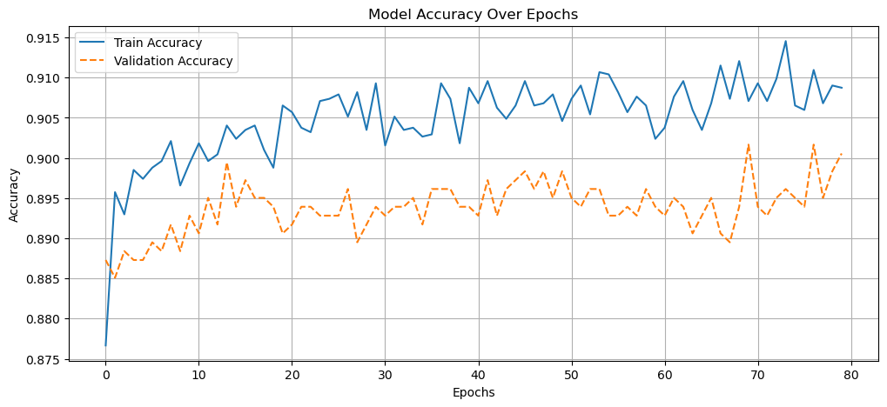
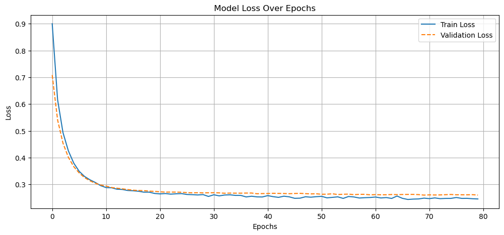

import pandas as pd
import numpy as np
import tensorflow as tf
import os
import matplotlib.pyplot as plt
import randomfrom sklearn.model_selection import train_test_split
from sklearn.preprocessing import StandardScaler, OneHotEncoder, LabelEncoder
from sklearn.compose import ColumnTransformer
from sklearn.pipeline import Pipeline
from sklearn.metrics import accuracy_score# Set the working directory
os.chdir("C:/Users/mboldi/Documents/Teaching/UNIL/MachineLearning/Spring_2025/3 - Models/3.3 - Neural Networks/InClass")# Load your dataframe
df = pd.read_csv("bank.csv")# Separate predictors from target, and convert target variable to numeric
label_encoder = LabelEncoder()
y = label_encoder.fit_transform(df['deposit'])
X = df.drop('deposit', axis=1)# Identify variable types
numerical_cols = X.select_dtypes(include=['float64', 'int64']).columns
categorical_cols = X.select_dtypes(include=['object']).columns# Split the data
X_train, X_test, y_train, y_test = train_test_split(X, y, test_size=0.2, random_state=42, stratify=y)# Standardization and Encoding
num_transformer = StandardScaler()
cat_transformer = OneHotEncoder(handle_unknown='ignore')
preprocessor = ColumnTransformer([
('num', num_transformer, numerical_cols),
('cat', cat_transformer, categorical_cols)
])
# Transform the datasets
X_train_preprocessed = preprocessor.fit_transform(X_train)
X_test_preprocessed = preprocessor.transform(X_test)# Define the neural network architecture
model1 = tf.keras.Sequential([
tf.keras.Input(shape=(X_train_preprocessed.shape[1],)),
tf.keras.layers.Dense(128, activation='relu'),
tf.keras.layers.Dense(64, activation='relu'),
tf.keras.layers.Dense(1, activation='sigmoid')
])
# Define the improved neural network
model2 = tf.keras.Sequential([
tf.keras.layers.Input(shape=(X_train_preprocessed.shape[1],)),
tf.keras.layers.Dense(128, activation='relu', kernel_regularizer=tf.keras.regularizers.l1_l2(l1=0.0005, l2=0.0005)),
tf.keras.layers.Dropout(0.3), # Dropout added
tf.keras.layers.Dense(64, activation='relu', kernel_regularizer=tf.keras.regularizers.l1_l2(l1=0.0005, l2=0.0005)),
tf.keras.layers.Dropout(0.3), # Dropout added
tf.keras.layers.Dense(1, activation='sigmoid')
])# See model structure
model1.summary()
model2.summary()Model: "sequential"
┏━━━━━━━━━━━━━━━━━━━━━━━━━━━━━━━━━━━━━━┳━━━━━━━━━━━━━━━━━━━━━━━━━━━━━┳━━━━━━━━━━━━━━━━━┓ ┃ Layer (type) ┃ Output Shape ┃ Param # ┃ ┡━━━━━━━━━━━━━━━━━━━━━━━━━━━━━━━━━━━━━━╇━━━━━━━━━━━━━━━━━━━━━━━━━━━━━╇━━━━━━━━━━━━━━━━━┩ │ dense (Dense) │ (None, 128) │ 5,888 │ ├──────────────────────────────────────┼─────────────────────────────┼─────────────────┤ │ dense_1 (Dense) │ (None, 64) │ 8,256 │ ├──────────────────────────────────────┼─────────────────────────────┼─────────────────┤ │ dense_2 (Dense) │ (None, 1) │ 65 │ └──────────────────────────────────────┴─────────────────────────────┴─────────────────┘
Total params: 14,209 (55.50 KB)
Trainable params: 14,209 (55.50 KB)
Non-trainable params: 0 (0.00 B)
Model: "sequential_1"
┏━━━━━━━━━━━━━━━━━━━━━━━━━━━━━━━━━━━━━━┳━━━━━━━━━━━━━━━━━━━━━━━━━━━━━┳━━━━━━━━━━━━━━━━━┓ ┃ Layer (type) ┃ Output Shape ┃ Param # ┃ ┡━━━━━━━━━━━━━━━━━━━━━━━━━━━━━━━━━━━━━━╇━━━━━━━━━━━━━━━━━━━━━━━━━━━━━╇━━━━━━━━━━━━━━━━━┩ │ dense_3 (Dense) │ (None, 128) │ 5,888 │ ├──────────────────────────────────────┼─────────────────────────────┼─────────────────┤ │ dropout (Dropout) │ (None, 128) │ 0 │ ├──────────────────────────────────────┼─────────────────────────────┼─────────────────┤ │ dense_4 (Dense) │ (None, 64) │ 8,256 │ ├──────────────────────────────────────┼─────────────────────────────┼─────────────────┤ │ dropout_1 (Dropout) │ (None, 64) │ 0 │ ├──────────────────────────────────────┼─────────────────────────────┼─────────────────┤ │ dense_5 (Dense) │ (None, 1) │ 65 │ └──────────────────────────────────────┴─────────────────────────────┴─────────────────┘
Total params: 14,209 (55.50 KB)
Trainable params: 14,209 (55.50 KB)
Non-trainable params: 0 (0.00 B)
# Compile the models with an adaptive learning rate
model1.compile(optimizer=tf.keras.optimizers.Adam(learning_rate=0.001),
loss='binary_crossentropy',
metrics=['accuracy'])
model2.compile(optimizer=tf.keras.optimizers.Adam(learning_rate=0.001),
loss='binary_crossentropy',
metrics=['accuracy'])# Introduce early stopping (used for model 2)
early_stopping = tf.keras.callbacks.EarlyStopping(monitor='val_loss', patience=10, restore_best_weights=True)# Set seed for Python's built-in random module
random.seed(145)
np.random.seed(345)
tf.random.set_seed(765)
# Train the models
history1 = model1.fit(X_train_preprocessed, y_train, epochs=100, batch_size=32,
validation_data=(X_test_preprocessed, y_test),
verbose=1)
history2 = model2.fit(X_train_preprocessed, y_train, epochs=100, batch_size=32,
validation_data=(X_test_preprocessed, y_test),
callbacks=[early_stopping], verbose=1)Epoch 1/100
113/113 ━━━━━━━━━━━━━━━━━━━━ 1s 3ms/step - accuracy: 0.8532 - loss: 0.3908 - val_accuracy: 0.8862 - val_loss: 0.2561
Epoch 2/100
113/113 ━━━━━━━━━━━━━━━━━━━━ 0s 1ms/step - accuracy: 0.9065 - loss: 0.2295 - val_accuracy: 0.8928 - val_loss: 0.2420
Epoch 3/100
113/113 ━━━━━━━━━━━━━━━━━━━━ 0s 2ms/step - accuracy: 0.9144 - loss: 0.2110 - val_accuracy: 0.8961 - val_loss: 0.2354
Epoch 4/100
113/113 ━━━━━━━━━━━━━━━━━━━━ 0s 2ms/step - accuracy: 0.9226 - loss: 0.1992 - val_accuracy: 0.8961 - val_loss: 0.2329
Epoch 5/100
113/113 ━━━━━━━━━━━━━━━━━━━━ 0s 2ms/step - accuracy: 0.9283 - loss: 0.1900 - val_accuracy: 0.8983 - val_loss: 0.2318
Epoch 6/100
113/113 ━━━━━━━━━━━━━━━━━━━━ 0s 2ms/step - accuracy: 0.9296 - loss: 0.1821 - val_accuracy: 0.8928 - val_loss: 0.2309
Epoch 7/100
113/113 ━━━━━━━━━━━━━━━━━━━━ 0s 2ms/step - accuracy: 0.9294 - loss: 0.1744 - val_accuracy: 0.8917 - val_loss: 0.2306
Epoch 8/100
113/113 ━━━━━━━━━━━━━━━━━━━━ 0s 2ms/step - accuracy: 0.9326 - loss: 0.1662 - val_accuracy: 0.8939 - val_loss: 0.2309
Epoch 9/100
113/113 ━━━━━━━━━━━━━━━━━━━━ 0s 2ms/step - accuracy: 0.9348 - loss: 0.1579 - val_accuracy: 0.8928 - val_loss: 0.2326
Epoch 10/100
113/113 ━━━━━━━━━━━━━━━━━━━━ 0s 2ms/step - accuracy: 0.9372 - loss: 0.1497 - val_accuracy: 0.8906 - val_loss: 0.2351
Epoch 11/100
113/113 ━━━━━━━━━━━━━━━━━━━━ 0s 2ms/step - accuracy: 0.9407 - loss: 0.1416 - val_accuracy: 0.8884 - val_loss: 0.2385
Epoch 12/100
113/113 ━━━━━━━━━━━━━━━━━━━━ 0s 2ms/step - accuracy: 0.9462 - loss: 0.1329 - val_accuracy: 0.8906 - val_loss: 0.2431
Epoch 13/100
113/113 ━━━━━━━━━━━━━━━━━━━━ 0s 2ms/step - accuracy: 0.9484 - loss: 0.1247 - val_accuracy: 0.8884 - val_loss: 0.2474
Epoch 14/100
113/113 ━━━━━━━━━━━━━━━━━━━━ 0s 2ms/step - accuracy: 0.9526 - loss: 0.1165 - val_accuracy: 0.8917 - val_loss: 0.2540
Epoch 15/100
113/113 ━━━━━━━━━━━━━━━━━━━━ 0s 2ms/step - accuracy: 0.9580 - loss: 0.1089 - val_accuracy: 0.8906 - val_loss: 0.2620
Epoch 16/100
113/113 ━━━━━━━━━━━━━━━━━━━━ 0s 2ms/step - accuracy: 0.9605 - loss: 0.1018 - val_accuracy: 0.8884 - val_loss: 0.2693
Epoch 17/100
113/113 ━━━━━━━━━━━━━━━━━━━━ 0s 2ms/step - accuracy: 0.9664 - loss: 0.0952 - val_accuracy: 0.8873 - val_loss: 0.2762
Epoch 18/100
113/113 ━━━━━━━━━━━━━━━━━━━━ 0s 2ms/step - accuracy: 0.9677 - loss: 0.0881 - val_accuracy: 0.8862 - val_loss: 0.2861
Epoch 19/100
113/113 ━━━━━━━━━━━━━━━━━━━━ 0s 2ms/step - accuracy: 0.9715 - loss: 0.0822 - val_accuracy: 0.8829 - val_loss: 0.2955
Epoch 20/100
113/113 ━━━━━━━━━━━━━━━━━━━━ 0s 2ms/step - accuracy: 0.9739 - loss: 0.0770 - val_accuracy: 0.8829 - val_loss: 0.3044
Epoch 21/100
113/113 ━━━━━━━━━━━━━━━━━━━━ 0s 2ms/step - accuracy: 0.9764 - loss: 0.0703 - val_accuracy: 0.8840 - val_loss: 0.3148
Epoch 22/100
113/113 ━━━━━━━━━━━━━━━━━━━━ 0s 2ms/step - accuracy: 0.9783 - loss: 0.0652 - val_accuracy: 0.8818 - val_loss: 0.3241
Epoch 23/100
113/113 ━━━━━━━━━━━━━━━━━━━━ 0s 2ms/step - accuracy: 0.9790 - loss: 0.0608 - val_accuracy: 0.8807 - val_loss: 0.3341
Epoch 24/100
113/113 ━━━━━━━━━━━━━━━━━━━━ 0s 2ms/step - accuracy: 0.9816 - loss: 0.0564 - val_accuracy: 0.8807 - val_loss: 0.3437
Epoch 25/100
113/113 ━━━━━━━━━━━━━━━━━━━━ 0s 2ms/step - accuracy: 0.9851 - loss: 0.0516 - val_accuracy: 0.8762 - val_loss: 0.3526
Epoch 26/100
113/113 ━━━━━━━━━━━━━━━━━━━━ 0s 2ms/step - accuracy: 0.9864 - loss: 0.0487 - val_accuracy: 0.8773 - val_loss: 0.3635
Epoch 27/100
113/113 ━━━━━━━━━━━━━━━━━━━━ 0s 2ms/step - accuracy: 0.9870 - loss: 0.0445 - val_accuracy: 0.8785 - val_loss: 0.3755
Epoch 28/100
113/113 ━━━━━━━━━━━━━━━━━━━━ 0s 2ms/step - accuracy: 0.9873 - loss: 0.0414 - val_accuracy: 0.8773 - val_loss: 0.3865
Epoch 29/100
113/113 ━━━━━━━━━━━━━━━━━━━━ 0s 2ms/step - accuracy: 0.9885 - loss: 0.0381 - val_accuracy: 0.8785 - val_loss: 0.3978
Epoch 30/100
113/113 ━━━━━━━━━━━━━━━━━━━━ 0s 2ms/step - accuracy: 0.9917 - loss: 0.0356 - val_accuracy: 0.8785 - val_loss: 0.4091
Epoch 31/100
113/113 ━━━━━━━━━━━━━━━━━━━━ 0s 2ms/step - accuracy: 0.9926 - loss: 0.0326 - val_accuracy: 0.8785 - val_loss: 0.4174
Epoch 32/100
113/113 ━━━━━━━━━━━━━━━━━━━━ 0s 2ms/step - accuracy: 0.9924 - loss: 0.0303 - val_accuracy: 0.8740 - val_loss: 0.4338
Epoch 33/100
113/113 ━━━━━━━━━━━━━━━━━━━━ 0s 2ms/step - accuracy: 0.9931 - loss: 0.0289 - val_accuracy: 0.8773 - val_loss: 0.4442
Epoch 34/100
113/113 ━━━━━━━━━━━━━━━━━━━━ 0s 2ms/step - accuracy: 0.9928 - loss: 0.0263 - val_accuracy: 0.8785 - val_loss: 0.4602
Epoch 35/100
113/113 ━━━━━━━━━━━━━━━━━━━━ 0s 2ms/step - accuracy: 0.9933 - loss: 0.0242 - val_accuracy: 0.8762 - val_loss: 0.4661
Epoch 36/100
113/113 ━━━━━━━━━━━━━━━━━━━━ 0s 2ms/step - accuracy: 0.9932 - loss: 0.0235 - val_accuracy: 0.8796 - val_loss: 0.4745
Epoch 37/100
113/113 ━━━━━━━━━━━━━━━━━━━━ 0s 2ms/step - accuracy: 0.9943 - loss: 0.0214 - val_accuracy: 0.8785 - val_loss: 0.4870
Epoch 38/100
113/113 ━━━━━━━━━━━━━━━━━━━━ 0s 2ms/step - accuracy: 0.9950 - loss: 0.0201 - val_accuracy: 0.8796 - val_loss: 0.5036
Epoch 39/100
113/113 ━━━━━━━━━━━━━━━━━━━━ 0s 2ms/step - accuracy: 0.9952 - loss: 0.0187 - val_accuracy: 0.8807 - val_loss: 0.5157
Epoch 40/100
113/113 ━━━━━━━━━━━━━━━━━━━━ 0s 2ms/step - accuracy: 0.9951 - loss: 0.0170 - val_accuracy: 0.8818 - val_loss: 0.5306
Epoch 41/100
113/113 ━━━━━━━━━━━━━━━━━━━━ 0s 2ms/step - accuracy: 0.9954 - loss: 0.0161 - val_accuracy: 0.8796 - val_loss: 0.5504
Epoch 42/100
113/113 ━━━━━━━━━━━━━━━━━━━━ 0s 1ms/step - accuracy: 0.9959 - loss: 0.0150 - val_accuracy: 0.8818 - val_loss: 0.5745
Epoch 43/100
113/113 ━━━━━━━━━━━━━━━━━━━━ 0s 1ms/step - accuracy: 0.9964 - loss: 0.0147 - val_accuracy: 0.8840 - val_loss: 0.5862
Epoch 44/100
113/113 ━━━━━━━━━━━━━━━━━━━━ 0s 2ms/step - accuracy: 0.9963 - loss: 0.0144 - val_accuracy: 0.8851 - val_loss: 0.6229
Epoch 45/100
113/113 ━━━━━━━━━━━━━━━━━━━━ 0s 2ms/step - accuracy: 0.9966 - loss: 0.0146 - val_accuracy: 0.8851 - val_loss: 0.6379
Epoch 46/100
113/113 ━━━━━━━━━━━━━━━━━━━━ 0s 2ms/step - accuracy: 0.9958 - loss: 0.0139 - val_accuracy: 0.8840 - val_loss: 0.6374
Epoch 47/100
113/113 ━━━━━━━━━━━━━━━━━━━━ 0s 2ms/step - accuracy: 0.9926 - loss: 0.0229 - val_accuracy: 0.8851 - val_loss: 0.5812
Epoch 48/100
113/113 ━━━━━━━━━━━━━━━━━━━━ 0s 2ms/step - accuracy: 0.9893 - loss: 0.0288 - val_accuracy: 0.8906 - val_loss: 0.6542
Epoch 49/100
113/113 ━━━━━━━━━━━━━━━━━━━━ 0s 2ms/step - accuracy: 0.9914 - loss: 0.0231 - val_accuracy: 0.8785 - val_loss: 0.6499
Epoch 50/100
113/113 ━━━━━━━━━━━━━━━━━━━━ 0s 2ms/step - accuracy: 0.9951 - loss: 0.0156 - val_accuracy: 0.8851 - val_loss: 0.6884
Epoch 51/100
113/113 ━━━━━━━━━━━━━━━━━━━━ 0s 2ms/step - accuracy: 0.9956 - loss: 0.0126 - val_accuracy: 0.8807 - val_loss: 0.6703
Epoch 52/100
113/113 ━━━━━━━━━━━━━━━━━━━━ 0s 2ms/step - accuracy: 0.9982 - loss: 0.0102 - val_accuracy: 0.8862 - val_loss: 0.6575
Epoch 53/100
113/113 ━━━━━━━━━━━━━━━━━━━━ 0s 2ms/step - accuracy: 0.9985 - loss: 0.0084 - val_accuracy: 0.8884 - val_loss: 0.6703
Epoch 54/100
113/113 ━━━━━━━━━━━━━━━━━━━━ 0s 2ms/step - accuracy: 0.9985 - loss: 0.0073 - val_accuracy: 0.8884 - val_loss: 0.6820
Epoch 55/100
113/113 ━━━━━━━━━━━━━━━━━━━━ 0s 2ms/step - accuracy: 0.9993 - loss: 0.0070 - val_accuracy: 0.8884 - val_loss: 0.6924
Epoch 56/100
113/113 ━━━━━━━━━━━━━━━━━━━━ 0s 2ms/step - accuracy: 0.9993 - loss: 0.0063 - val_accuracy: 0.8906 - val_loss: 0.6958
Epoch 57/100
113/113 ━━━━━━━━━━━━━━━━━━━━ 0s 2ms/step - accuracy: 0.9993 - loss: 0.0058 - val_accuracy: 0.8917 - val_loss: 0.7019
Epoch 58/100
113/113 ━━━━━━━━━━━━━━━━━━━━ 0s 2ms/step - accuracy: 0.9995 - loss: 0.0052 - val_accuracy: 0.8939 - val_loss: 0.7024
Epoch 59/100
113/113 ━━━━━━━━━━━━━━━━━━━━ 0s 2ms/step - accuracy: 0.9995 - loss: 0.0052 - val_accuracy: 0.8906 - val_loss: 0.7132
Epoch 60/100
113/113 ━━━━━━━━━━━━━━━━━━━━ 0s 2ms/step - accuracy: 0.9995 - loss: 0.0046 - val_accuracy: 0.8906 - val_loss: 0.7271
Epoch 61/100
113/113 ━━━━━━━━━━━━━━━━━━━━ 0s 2ms/step - accuracy: 0.9995 - loss: 0.0042 - val_accuracy: 0.8862 - val_loss: 0.7136
Epoch 62/100
113/113 ━━━━━━━━━━━━━━━━━━━━ 0s 2ms/step - accuracy: 0.9992 - loss: 0.0047 - val_accuracy: 0.8818 - val_loss: 0.7170
Epoch 63/100
113/113 ━━━━━━━━━━━━━━━━━━━━ 0s 2ms/step - accuracy: 0.9996 - loss: 0.0042 - val_accuracy: 0.8840 - val_loss: 0.7218
Epoch 64/100
113/113 ━━━━━━━━━━━━━━━━━━━━ 0s 2ms/step - accuracy: 0.9999 - loss: 0.0040 - val_accuracy: 0.8862 - val_loss: 0.7409
Epoch 65/100
113/113 ━━━━━━━━━━━━━━━━━━━━ 0s 2ms/step - accuracy: 0.9997 - loss: 0.0040 - val_accuracy: 0.8851 - val_loss: 0.7647
Epoch 66/100
113/113 ━━━━━━━━━━━━━━━━━━━━ 0s 2ms/step - accuracy: 0.9985 - loss: 0.0066 - val_accuracy: 0.8928 - val_loss: 0.7886
Epoch 67/100
113/113 ━━━━━━━━━━━━━━━━━━━━ 0s 2ms/step - accuracy: 0.9963 - loss: 0.0104 - val_accuracy: 0.8950 - val_loss: 0.7405
Epoch 68/100
113/113 ━━━━━━━━━━━━━━━━━━━━ 0s 1ms/step - accuracy: 0.9962 - loss: 0.0106 - val_accuracy: 0.8884 - val_loss: 0.7894
Epoch 69/100
113/113 ━━━━━━━━━━━━━━━━━━━━ 0s 1ms/step - accuracy: 0.9960 - loss: 0.0121 - val_accuracy: 0.8785 - val_loss: 0.7821
Epoch 70/100
113/113 ━━━━━━━━━━━━━━━━━━━━ 0s 2ms/step - accuracy: 0.9970 - loss: 0.0132 - val_accuracy: 0.8895 - val_loss: 0.7293
Epoch 71/100
113/113 ━━━━━━━━━━━━━━━━━━━━ 0s 2ms/step - accuracy: 0.9968 - loss: 0.0120 - val_accuracy: 0.8829 - val_loss: 0.7393
Epoch 72/100
113/113 ━━━━━━━━━━━━━━━━━━━━ 0s 1ms/step - accuracy: 0.9927 - loss: 0.0177 - val_accuracy: 0.8818 - val_loss: 0.7398
Epoch 73/100
113/113 ━━━━━━━━━━━━━━━━━━━━ 0s 2ms/step - accuracy: 0.9950 - loss: 0.0204 - val_accuracy: 0.8630 - val_loss: 0.7346
Epoch 74/100
113/113 ━━━━━━━━━━━━━━━━━━━━ 0s 1ms/step - accuracy: 0.9917 - loss: 0.0254 - val_accuracy: 0.8807 - val_loss: 0.6990
Epoch 75/100
113/113 ━━━━━━━━━━━━━━━━━━━━ 0s 2ms/step - accuracy: 0.9950 - loss: 0.0133 - val_accuracy: 0.8773 - val_loss: 0.7305
Epoch 76/100
113/113 ━━━━━━━━━━━━━━━━━━━━ 0s 2ms/step - accuracy: 0.9965 - loss: 0.0100 - val_accuracy: 0.8762 - val_loss: 0.7272
Epoch 77/100
113/113 ━━━━━━━━━━━━━━━━━━━━ 0s 1ms/step - accuracy: 0.9999 - loss: 0.0044 - val_accuracy: 0.8751 - val_loss: 0.7288
Epoch 78/100
113/113 ━━━━━━━━━━━━━━━━━━━━ 0s 2ms/step - accuracy: 0.9997 - loss: 0.0035 - val_accuracy: 0.8729 - val_loss: 0.7267
Epoch 79/100
113/113 ━━━━━━━━━━━━━━━━━━━━ 0s 2ms/step - accuracy: 0.9999 - loss: 0.0031 - val_accuracy: 0.8751 - val_loss: 0.7464
Epoch 80/100
113/113 ━━━━━━━━━━━━━━━━━━━━ 0s 2ms/step - accuracy: 0.9999 - loss: 0.0025 - val_accuracy: 0.8762 - val_loss: 0.7459
Epoch 81/100
113/113 ━━━━━━━━━━━━━━━━━━━━ 0s 2ms/step - accuracy: 1.0000 - loss: 0.0021 - val_accuracy: 0.8762 - val_loss: 0.7594
Epoch 82/100
113/113 ━━━━━━━━━━━━━━━━━━━━ 0s 2ms/step - accuracy: 1.0000 - loss: 0.0018 - val_accuracy: 0.8751 - val_loss: 0.7621
Epoch 83/100
113/113 ━━━━━━━━━━━━━━━━━━━━ 0s 1ms/step - accuracy: 1.0000 - loss: 0.0017 - val_accuracy: 0.8762 - val_loss: 0.7702
Epoch 84/100
113/113 ━━━━━━━━━━━━━━━━━━━━ 0s 2ms/step - accuracy: 1.0000 - loss: 0.0015 - val_accuracy: 0.8762 - val_loss: 0.7751
Epoch 85/100
113/113 ━━━━━━━━━━━━━━━━━━━━ 0s 1ms/step - accuracy: 1.0000 - loss: 0.0014 - val_accuracy: 0.8762 - val_loss: 0.7823
Epoch 86/100
113/113 ━━━━━━━━━━━━━━━━━━━━ 0s 2ms/step - accuracy: 1.0000 - loss: 0.0014 - val_accuracy: 0.8773 - val_loss: 0.7842
Epoch 87/100
113/113 ━━━━━━━━━━━━━━━━━━━━ 0s 1ms/step - accuracy: 1.0000 - loss: 0.0013 - val_accuracy: 0.8740 - val_loss: 0.7934
Epoch 88/100
113/113 ━━━━━━━━━━━━━━━━━━━━ 0s 2ms/step - accuracy: 0.9998 - loss: 0.0016 - val_accuracy: 0.8773 - val_loss: 0.7999
Epoch 89/100
113/113 ━━━━━━━━━━━━━━━━━━━━ 0s 1ms/step - accuracy: 0.9997 - loss: 0.0031 - val_accuracy: 0.8663 - val_loss: 0.8124
Epoch 90/100
113/113 ━━━━━━━━━━━━━━━━━━━━ 0s 1ms/step - accuracy: 0.9988 - loss: 0.0034 - val_accuracy: 0.8751 - val_loss: 0.7959
Epoch 91/100
113/113 ━━━━━━━━━━━━━━━━━━━━ 0s 1ms/step - accuracy: 0.9999 - loss: 0.0025 - val_accuracy: 0.8718 - val_loss: 0.8092
Epoch 92/100
113/113 ━━━━━━━━━━━━━━━━━━━━ 0s 1ms/step - accuracy: 0.9991 - loss: 0.0064 - val_accuracy: 0.8851 - val_loss: 0.7995
Epoch 93/100
113/113 ━━━━━━━━━━━━━━━━━━━━ 0s 2ms/step - accuracy: 0.9991 - loss: 0.0046 - val_accuracy: 0.8740 - val_loss: 0.8382
Epoch 94/100
113/113 ━━━━━━━━━━━━━━━━━━━━ 0s 2ms/step - accuracy: 0.9987 - loss: 0.0038 - val_accuracy: 0.8751 - val_loss: 0.8371
Epoch 95/100
113/113 ━━━━━━━━━━━━━━━━━━━━ 0s 1ms/step - accuracy: 0.9989 - loss: 0.0032 - val_accuracy: 0.8807 - val_loss: 0.8295
Epoch 96/100
113/113 ━━━━━━━━━━━━━━━━━━━━ 0s 2ms/step - accuracy: 0.9990 - loss: 0.0032 - val_accuracy: 0.8818 - val_loss: 0.8421
Epoch 97/100
113/113 ━━━━━━━━━━━━━━━━━━━━ 0s 1ms/step - accuracy: 1.0000 - loss: 0.0015 - val_accuracy: 0.8796 - val_loss: 0.8518
Epoch 98/100
113/113 ━━━━━━━━━━━━━━━━━━━━ 0s 2ms/step - accuracy: 1.0000 - loss: 0.0011 - val_accuracy: 0.8785 - val_loss: 0.8605
Epoch 99/100
113/113 ━━━━━━━━━━━━━━━━━━━━ 0s 1ms/step - accuracy: 1.0000 - loss: 8.9535e-04 - val_accuracy: 0.8785 - val_loss: 0.8675
Epoch 100/100
113/113 ━━━━━━━━━━━━━━━━━━━━ 0s 2ms/step - accuracy: 1.0000 - loss: 9.6189e-04 - val_accuracy: 0.8796 - val_loss: 0.8767
Epoch 1/100
113/113 ━━━━━━━━━━━━━━━━━━━━ 1s 3ms/step - accuracy: 0.8439 - loss: 1.0397 - val_accuracy: 0.8873 - val_loss: 0.7083
Epoch 2/100
113/113 ━━━━━━━━━━━━━━━━━━━━ 0s 2ms/step - accuracy: 0.9035 - loss: 0.6452 - val_accuracy: 0.8851 - val_loss: 0.5410
Epoch 3/100
113/113 ━━━━━━━━━━━━━━━━━━━━ 0s 2ms/step - accuracy: 0.9022 - loss: 0.5065 - val_accuracy: 0.8884 - val_loss: 0.4541
Epoch 4/100
113/113 ━━━━━━━━━━━━━━━━━━━━ 0s 2ms/step - accuracy: 0.9069 - loss: 0.4295 - val_accuracy: 0.8873 - val_loss: 0.4013
Epoch 5/100
113/113 ━━━━━━━━━━━━━━━━━━━━ 0s 2ms/step - accuracy: 0.9041 - loss: 0.3787 - val_accuracy: 0.8873 - val_loss: 0.3665
Epoch 6/100
113/113 ━━━━━━━━━━━━━━━━━━━━ 0s 2ms/step - accuracy: 0.9057 - loss: 0.3438 - val_accuracy: 0.8895 - val_loss: 0.3432
Epoch 7/100
113/113 ━━━━━━━━━━━━━━━━━━━━ 0s 2ms/step - accuracy: 0.9087 - loss: 0.3183 - val_accuracy: 0.8884 - val_loss: 0.3256
Epoch 8/100
113/113 ━━━━━━━━━━━━━━━━━━━━ 0s 2ms/step - accuracy: 0.9113 - loss: 0.3035 - val_accuracy: 0.8917 - val_loss: 0.3137
Epoch 9/100
113/113 ━━━━━━━━━━━━━━━━━━━━ 0s 2ms/step - accuracy: 0.9068 - loss: 0.2936 - val_accuracy: 0.8884 - val_loss: 0.3046
Epoch 10/100
113/113 ━━━━━━━━━━━━━━━━━━━━ 0s 2ms/step - accuracy: 0.9077 - loss: 0.2813 - val_accuracy: 0.8928 - val_loss: 0.2978
Epoch 11/100
113/113 ━━━━━━━━━━━━━━━━━━━━ 0s 2ms/step - accuracy: 0.9087 - loss: 0.2727 - val_accuracy: 0.8906 - val_loss: 0.2939
Epoch 12/100
113/113 ━━━━━━━━━━━━━━━━━━━━ 0s 2ms/step - accuracy: 0.9099 - loss: 0.2758 - val_accuracy: 0.8950 - val_loss: 0.2886
Epoch 13/100
113/113 ━━━━━━━━━━━━━━━━━━━━ 0s 2ms/step - accuracy: 0.9121 - loss: 0.2675 - val_accuracy: 0.8917 - val_loss: 0.2861
Epoch 14/100
113/113 ━━━━━━━━━━━━━━━━━━━━ 0s 2ms/step - accuracy: 0.9151 - loss: 0.2662 - val_accuracy: 0.8994 - val_loss: 0.2837
Epoch 15/100
113/113 ━━━━━━━━━━━━━━━━━━━━ 0s 1ms/step - accuracy: 0.9113 - loss: 0.2640 - val_accuracy: 0.8939 - val_loss: 0.2810
Epoch 16/100
113/113 ━━━━━━━━━━━━━━━━━━━━ 0s 2ms/step - accuracy: 0.9129 - loss: 0.2617 - val_accuracy: 0.8972 - val_loss: 0.2787
Epoch 17/100
113/113 ━━━━━━━━━━━━━━━━━━━━ 0s 2ms/step - accuracy: 0.9098 - loss: 0.2593 - val_accuracy: 0.8950 - val_loss: 0.2775
Epoch 18/100
113/113 ━━━━━━━━━━━━━━━━━━━━ 0s 2ms/step - accuracy: 0.9108 - loss: 0.2549 - val_accuracy: 0.8950 - val_loss: 0.2769
Epoch 19/100
113/113 ━━━━━━━━━━━━━━━━━━━━ 0s 2ms/step - accuracy: 0.9102 - loss: 0.2540 - val_accuracy: 0.8939 - val_loss: 0.2751
Epoch 20/100
113/113 ━━━━━━━━━━━━━━━━━━━━ 0s 2ms/step - accuracy: 0.9168 - loss: 0.2503 - val_accuracy: 0.8906 - val_loss: 0.2742
Epoch 21/100
113/113 ━━━━━━━━━━━━━━━━━━━━ 0s 2ms/step - accuracy: 0.9129 - loss: 0.2514 - val_accuracy: 0.8917 - val_loss: 0.2725
Epoch 22/100
113/113 ━━━━━━━━━━━━━━━━━━━━ 0s 2ms/step - accuracy: 0.9138 - loss: 0.2489 - val_accuracy: 0.8939 - val_loss: 0.2714
Epoch 23/100
113/113 ━━━━━━━━━━━━━━━━━━━━ 0s 2ms/step - accuracy: 0.9146 - loss: 0.2455 - val_accuracy: 0.8939 - val_loss: 0.2716
Epoch 24/100
113/113 ━━━━━━━━━━━━━━━━━━━━ 0s 2ms/step - accuracy: 0.9199 - loss: 0.2490 - val_accuracy: 0.8928 - val_loss: 0.2714
Epoch 25/100
113/113 ━━━━━━━━━━━━━━━━━━━━ 0s 2ms/step - accuracy: 0.9128 - loss: 0.2527 - val_accuracy: 0.8928 - val_loss: 0.2710
Epoch 26/100
113/113 ━━━━━━━━━━━━━━━━━━━━ 0s 2ms/step - accuracy: 0.9179 - loss: 0.2470 - val_accuracy: 0.8928 - val_loss: 0.2695
Epoch 27/100
113/113 ━━━━━━━━━━━━━━━━━━━━ 0s 2ms/step - accuracy: 0.9142 - loss: 0.2461 - val_accuracy: 0.8961 - val_loss: 0.2687
Epoch 28/100
113/113 ━━━━━━━━━━━━━━━━━━━━ 0s 2ms/step - accuracy: 0.9166 - loss: 0.2427 - val_accuracy: 0.8895 - val_loss: 0.2691
Epoch 29/100
113/113 ━━━━━━━━━━━━━━━━━━━━ 0s 2ms/step - accuracy: 0.9114 - loss: 0.2454 - val_accuracy: 0.8917 - val_loss: 0.2685
Epoch 30/100
113/113 ━━━━━━━━━━━━━━━━━━━━ 0s 1ms/step - accuracy: 0.9197 - loss: 0.2373 - val_accuracy: 0.8939 - val_loss: 0.2689
Epoch 31/100
113/113 ━━━━━━━━━━━━━━━━━━━━ 0s 2ms/step - accuracy: 0.9077 - loss: 0.2451 - val_accuracy: 0.8928 - val_loss: 0.2692
Epoch 32/100
113/113 ━━━━━━━━━━━━━━━━━━━━ 0s 2ms/step - accuracy: 0.9143 - loss: 0.2418 - val_accuracy: 0.8939 - val_loss: 0.2686
Epoch 33/100
113/113 ━━━━━━━━━━━━━━━━━━━━ 0s 2ms/step - accuracy: 0.9155 - loss: 0.2435 - val_accuracy: 0.8939 - val_loss: 0.2673
Epoch 34/100
113/113 ━━━━━━━━━━━━━━━━━━━━ 0s 1ms/step - accuracy: 0.9107 - loss: 0.2426 - val_accuracy: 0.8950 - val_loss: 0.2678
Epoch 35/100
113/113 ━━━━━━━━━━━━━━━━━━━━ 0s 2ms/step - accuracy: 0.9165 - loss: 0.2408 - val_accuracy: 0.8917 - val_loss: 0.2675
Epoch 36/100
113/113 ━━━━━━━━━━━━━━━━━━━━ 0s 2ms/step - accuracy: 0.9122 - loss: 0.2413 - val_accuracy: 0.8961 - val_loss: 0.2675
Epoch 37/100
113/113 ━━━━━━━━━━━━━━━━━━━━ 0s 1ms/step - accuracy: 0.9130 - loss: 0.2370 - val_accuracy: 0.8961 - val_loss: 0.2678
Epoch 38/100
113/113 ━━━━━━━━━━━━━━━━━━━━ 0s 2ms/step - accuracy: 0.9157 - loss: 0.2364 - val_accuracy: 0.8961 - val_loss: 0.2680
Epoch 39/100
113/113 ━━━━━━━━━━━━━━━━━━━━ 0s 1ms/step - accuracy: 0.9132 - loss: 0.2375 - val_accuracy: 0.8939 - val_loss: 0.2654
Epoch 40/100
113/113 ━━━━━━━━━━━━━━━━━━━━ 0s 2ms/step - accuracy: 0.9189 - loss: 0.2419 - val_accuracy: 0.8939 - val_loss: 0.2660
Epoch 41/100
113/113 ━━━━━━━━━━━━━━━━━━━━ 0s 2ms/step - accuracy: 0.9116 - loss: 0.2456 - val_accuracy: 0.8928 - val_loss: 0.2662
Epoch 42/100
113/113 ━━━━━━━━━━━━━━━━━━━━ 0s 2ms/step - accuracy: 0.9188 - loss: 0.2382 - val_accuracy: 0.8972 - val_loss: 0.2670
Epoch 43/100
113/113 ━━━━━━━━━━━━━━━━━━━━ 0s 2ms/step - accuracy: 0.9146 - loss: 0.2354 - val_accuracy: 0.8928 - val_loss: 0.2666
Epoch 44/100
113/113 ━━━━━━━━━━━━━━━━━━━━ 0s 2ms/step - accuracy: 0.9145 - loss: 0.2394 - val_accuracy: 0.8961 - val_loss: 0.2663
Epoch 45/100
113/113 ━━━━━━━━━━━━━━━━━━━━ 0s 2ms/step - accuracy: 0.9142 - loss: 0.2388 - val_accuracy: 0.8972 - val_loss: 0.2655
Epoch 46/100
113/113 ━━━━━━━━━━━━━━━━━━━━ 0s 2ms/step - accuracy: 0.9207 - loss: 0.2329 - val_accuracy: 0.8983 - val_loss: 0.2663
Epoch 47/100
113/113 ━━━━━━━━━━━━━━━━━━━━ 0s 2ms/step - accuracy: 0.9127 - loss: 0.2337 - val_accuracy: 0.8961 - val_loss: 0.2669
Epoch 48/100
113/113 ━━━━━━━━━━━━━━━━━━━━ 0s 2ms/step - accuracy: 0.9152 - loss: 0.2349 - val_accuracy: 0.8983 - val_loss: 0.2657
Epoch 49/100
113/113 ━━━━━━━━━━━━━━━━━━━━ 0s 2ms/step - accuracy: 0.9124 - loss: 0.2338 - val_accuracy: 0.8950 - val_loss: 0.2648
Epoch 50/100
113/113 ━━━━━━━━━━━━━━━━━━━━ 0s 2ms/step - accuracy: 0.9132 - loss: 0.2388 - val_accuracy: 0.8983 - val_loss: 0.2652
Epoch 51/100
113/113 ━━━━━━━━━━━━━━━━━━━━ 0s 2ms/step - accuracy: 0.9127 - loss: 0.2374 - val_accuracy: 0.8950 - val_loss: 0.2635
Epoch 52/100
113/113 ━━━━━━━━━━━━━━━━━━━━ 0s 2ms/step - accuracy: 0.9179 - loss: 0.2343 - val_accuracy: 0.8939 - val_loss: 0.2637
Epoch 53/100
113/113 ━━━━━━━━━━━━━━━━━━━━ 0s 2ms/step - accuracy: 0.9123 - loss: 0.2348 - val_accuracy: 0.8961 - val_loss: 0.2651
Epoch 54/100
113/113 ━━━━━━━━━━━━━━━━━━━━ 0s 2ms/step - accuracy: 0.9206 - loss: 0.2358 - val_accuracy: 0.8961 - val_loss: 0.2624
Epoch 55/100
113/113 ━━━━━━━━━━━━━━━━━━━━ 0s 2ms/step - accuracy: 0.9161 - loss: 0.2341 - val_accuracy: 0.8928 - val_loss: 0.2634
Epoch 56/100
113/113 ━━━━━━━━━━━━━━━━━━━━ 0s 2ms/step - accuracy: 0.9162 - loss: 0.2393 - val_accuracy: 0.8928 - val_loss: 0.2640
Epoch 57/100
113/113 ━━━━━━━━━━━━━━━━━━━━ 0s 2ms/step - accuracy: 0.9114 - loss: 0.2406 - val_accuracy: 0.8939 - val_loss: 0.2620
Epoch 58/100
113/113 ━━━━━━━━━━━━━━━━━━━━ 0s 2ms/step - accuracy: 0.9142 - loss: 0.2303 - val_accuracy: 0.8928 - val_loss: 0.2631
Epoch 59/100
113/113 ━━━━━━━━━━━━━━━━━━━━ 0s 2ms/step - accuracy: 0.9143 - loss: 0.2358 - val_accuracy: 0.8961 - val_loss: 0.2632
Epoch 60/100
113/113 ━━━━━━━━━━━━━━━━━━━━ 0s 2ms/step - accuracy: 0.9112 - loss: 0.2363 - val_accuracy: 0.8939 - val_loss: 0.2613
Epoch 61/100
113/113 ━━━━━━━━━━━━━━━━━━━━ 0s 2ms/step - accuracy: 0.9171 - loss: 0.2345 - val_accuracy: 0.8928 - val_loss: 0.2621
Epoch 62/100
113/113 ━━━━━━━━━━━━━━━━━━━━ 0s 2ms/step - accuracy: 0.9154 - loss: 0.2315 - val_accuracy: 0.8950 - val_loss: 0.2614
Epoch 63/100
113/113 ━━━━━━━━━━━━━━━━━━━━ 0s 2ms/step - accuracy: 0.9183 - loss: 0.2307 - val_accuracy: 0.8939 - val_loss: 0.2616
Epoch 64/100
113/113 ━━━━━━━━━━━━━━━━━━━━ 0s 2ms/step - accuracy: 0.9150 - loss: 0.2314 - val_accuracy: 0.8906 - val_loss: 0.2625
Epoch 65/100
113/113 ━━━━━━━━━━━━━━━━━━━━ 0s 2ms/step - accuracy: 0.9143 - loss: 0.2367 - val_accuracy: 0.8928 - val_loss: 0.2621
Epoch 66/100
113/113 ━━━━━━━━━━━━━━━━━━━━ 0s 2ms/step - accuracy: 0.9140 - loss: 0.2326 - val_accuracy: 0.8950 - val_loss: 0.2626
Epoch 67/100
113/113 ━━━━━━━━━━━━━━━━━━━━ 0s 2ms/step - accuracy: 0.9193 - loss: 0.2272 - val_accuracy: 0.8906 - val_loss: 0.2628
Epoch 68/100
113/113 ━━━━━━━━━━━━━━━━━━━━ 0s 1ms/step - accuracy: 0.9160 - loss: 0.2275 - val_accuracy: 0.8895 - val_loss: 0.2629
Epoch 69/100
113/113 ━━━━━━━━━━━━━━━━━━━━ 0s 2ms/step - accuracy: 0.9184 - loss: 0.2282 - val_accuracy: 0.8939 - val_loss: 0.2621
Epoch 70/100
113/113 ━━━━━━━━━━━━━━━━━━━━ 0s 2ms/step - accuracy: 0.9139 - loss: 0.2334 - val_accuracy: 0.9017 - val_loss: 0.2603
Epoch 71/100
113/113 ━━━━━━━━━━━━━━━━━━━━ 0s 2ms/step - accuracy: 0.9138 - loss: 0.2288 - val_accuracy: 0.8939 - val_loss: 0.2612
Epoch 72/100
113/113 ━━━━━━━━━━━━━━━━━━━━ 0s 2ms/step - accuracy: 0.9136 - loss: 0.2328 - val_accuracy: 0.8928 - val_loss: 0.2607
Epoch 73/100
113/113 ━━━━━━━━━━━━━━━━━━━━ 0s 2ms/step - accuracy: 0.9180 - loss: 0.2272 - val_accuracy: 0.8950 - val_loss: 0.2609
Epoch 74/100
113/113 ━━━━━━━━━━━━━━━━━━━━ 0s 2ms/step - accuracy: 0.9221 - loss: 0.2344 - val_accuracy: 0.8961 - val_loss: 0.2618
Epoch 75/100
113/113 ━━━━━━━━━━━━━━━━━━━━ 0s 2ms/step - accuracy: 0.9145 - loss: 0.2302 - val_accuracy: 0.8950 - val_loss: 0.2626
Epoch 76/100
113/113 ━━━━━━━━━━━━━━━━━━━━ 0s 2ms/step - accuracy: 0.9138 - loss: 0.2337 - val_accuracy: 0.8939 - val_loss: 0.2615
Epoch 77/100
113/113 ━━━━━━━━━━━━━━━━━━━━ 0s 2ms/step - accuracy: 0.9183 - loss: 0.2322 - val_accuracy: 0.9017 - val_loss: 0.2614
Epoch 78/100
113/113 ━━━━━━━━━━━━━━━━━━━━ 0s 2ms/step - accuracy: 0.9156 - loss: 0.2320 - val_accuracy: 0.8950 - val_loss: 0.2613
Epoch 79/100
113/113 ━━━━━━━━━━━━━━━━━━━━ 0s 2ms/step - accuracy: 0.9172 - loss: 0.2316 - val_accuracy: 0.8983 - val_loss: 0.2619
Epoch 80/100
113/113 ━━━━━━━━━━━━━━━━━━━━ 0s 2ms/step - accuracy: 0.9165 - loss: 0.2249 - val_accuracy: 0.9006 - val_loss: 0.2603# Evaluate the models
test_loss_1, test_acc_1 = model1.evaluate(X_test_preprocessed, y_test, verbose=0)
train_loss_1, train_acc_1 = model1.evaluate(X_train_preprocessed, y_train, verbose=0)
print(f'Test accuracy model 1: {test_acc_1:.4f}')
print(f'Training accuracy model 1: {train_acc_1:.4f}')
test_loss_2, test_acc_2 = model2.evaluate(X_test_preprocessed, y_test, verbose=0)
train_loss_2, train_acc_2 = model2.evaluate(X_train_preprocessed, y_train, verbose=0)
print(f'Test accuracy model 2: {test_acc_2:.4f}')
print(f'Training accuracy model 2: {train_acc_2:.4f}')Test accuracy model 1: 0.8796
Training accuracy model 1: 0.9997
Test accuracy model 2: 0.9017
Training accuracy model 2: 0.9176# Extract accuracy and loss history
history_dict = history2.history
# Plot training & validation accuracy values
plt.figure(figsize=(12, 5))
plt.plot(history_dict['accuracy'], label='Train Accuracy')
plt.plot(history_dict['val_accuracy'], label='Validation Accuracy', linestyle='dashed')
plt.xlabel('Epochs')
plt.ylabel('Accuracy')
plt.title('Model Accuracy Over Epochs')
plt.legend()
plt.grid(True)
plt.show()
# Plot training & validation loss values
plt.figure(figsize=(12, 5))
plt.plot(history_dict['loss'], label='Train Loss')
plt.plot(history_dict['val_loss'], label='Validation Loss', linestyle='dashed')
plt.xlabel('Epochs')
plt.ylabel('Loss')
plt.title('Model Loss Over Epochs')
plt.legend()
plt.grid(True)
plt.show()
